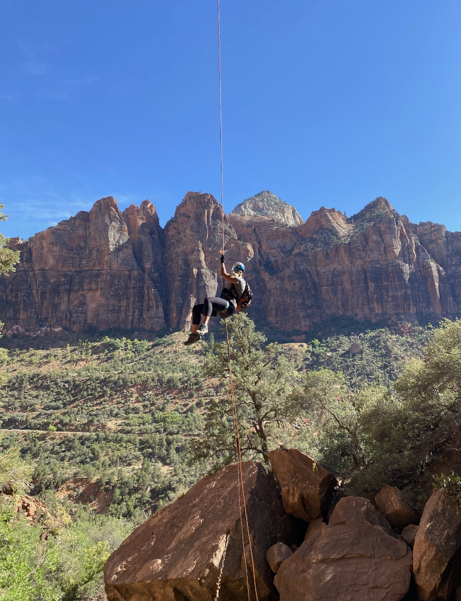
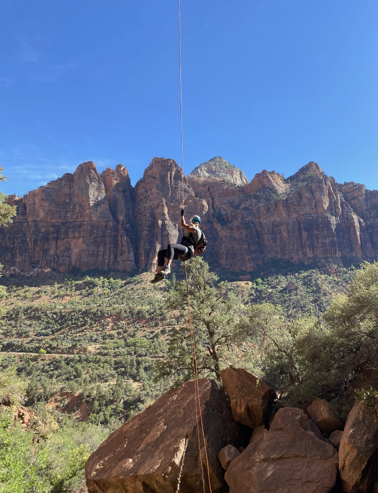

Pine Creek Canyon
Pine Creek is one of the most popular technical canyoneering routes in Zion National Park and exemplifies the beauty of "subterranean" slot canyons. Starting at the Canyon Overlook parking lot and ending at the Route 9 switchbacks in the main canyon, Pine Creek is one of the few beautiful slot canyons that features such easy access. Although it is one of the easier technical canyons in Zion, it is still serious business with several rappels, downclimbs, and many swims through cold water.
Learn more about
Pine Creek ,
Diana's Throne
Diana's Throne Canyon, also known as the Huntress Slot, is a great easy slot canyon located near Hwy 89 between Mt Carmel Jct and Kanab UT. The canyon boasts 2 major rappel sequences (2-3 rappels) and lots of down climbing.It is a great beginner canyon, and is used by a number of guiding companies in the area.
Learn more about
Diana's Throne
Keyhole
A brief, wonderful and definitely chilly canyon involving a few rappels and a long swim, Keyhole is a good introduction to technical canyoneering and a delightful way to spend an hour or two on a hot summer day.
Learn more about
Keyhole
 
